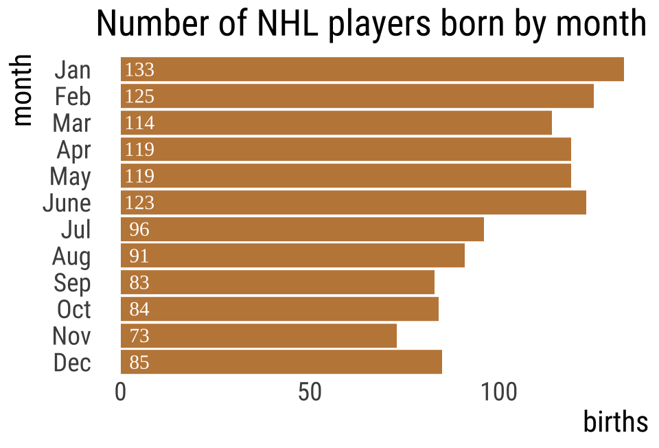
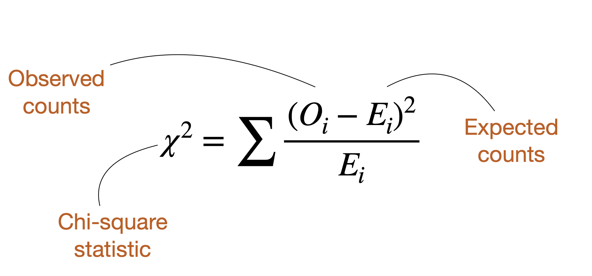
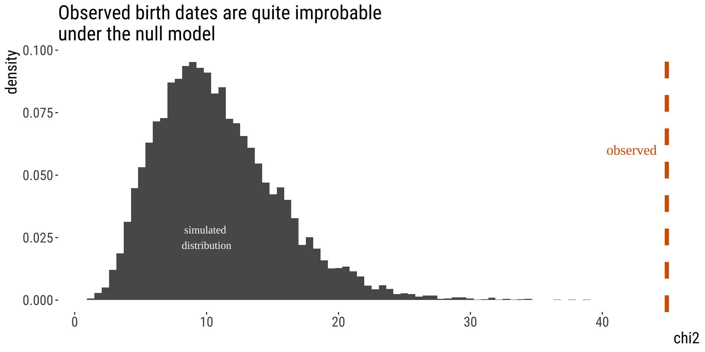
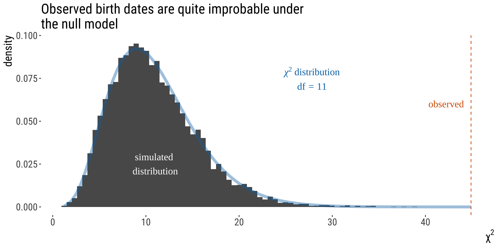
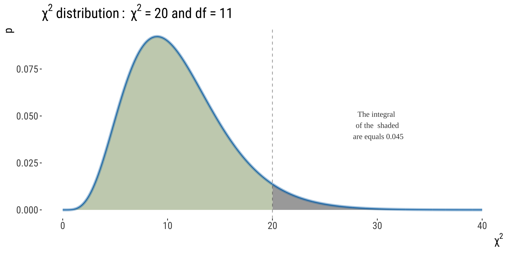

7.1.Goodness-of-fit tests
The binomial test
Keywords
Goodness-of-fit tests
Outline
•Goodness-of-fit tests
•The proportional model
•The \(\chi^2\) distribution
•Degrees of freedom
•The \(\chi^2\) test
•Using \(\chi^2\) to test if data are distributed according to a poisson distribution
Goodness of Fit Tests
Does data come from a given distribution with specified parameters?
NHL player birth months 🏒
Biological hypothesis: Being born earlier in the year makes players stand out when young, helping them achieve later success.
\(H_0\): Elite hockey players are born randomly across the year.
\(H_A\): Elite hockey players are NOT born randomly across the year.
Testing!
\(H_0\): Prop birth months of NHLers is like that of other humans.
\(H_A\): Prop birth months of NHLers is unlike that of other humans.
| month | births (%) |
|---|---|
| Jan | 7.94 |
| Feb | 7.63 |
| Mar | 8.72 |
| April | 8.63 |
| May | 8.95 |
| June | 8.57 |
| Jul | 8.76 |
| Aug | 8.50 |
| Sept | 8.54 |
| Oct | 8.19 |
| Nov | 7.70 |
| Dec | 7.87 |
Ventura et al. (2001). Births: final data for 1999. National Vital Statistics Reports Vol. 49, No. 1.
Introducing \(\chi^2\)
\(\chi^2\) summarizes the fit of categorical data to expectations.

\(\chi^2 = 0\): Data perfectly match null hypothesis expectations
\(χ^2 > 0\): Data show deviation from null hypothesis expectations
Finding Expectations
Expected number of births in month \(i\) is:
\(E[X] = n_{total} × \text{Null proportion}\)
\(n_{total} = 1245\) (just add up the births column)
\[E[X_i] = n_{total} \times \text{expected propotion}_i\]
| month | births | expected % | expected.n |
|---|---|---|---|
| Jan | 133 | 7.94 | 98.8 |
| Feb | 125 | 7.63 | 95.0 |
| Mar | 114 | 8.72 | 108.6 |
| Apr | 119 | 8.63 | 107.4 |
| May | 119 | 8.95 | 111.4 |
| June | 123 | 8.57 | 106.7 |
| Jul | 96 | 8.76 | 109.1 |
| Aug | 91 | 8.50 | 105.8 |
| Sep | 83 | 8.54 | 106.3 |
| Oct | 84 | 8.19 | 102.0 |
| Nov | 73 | 7.70 | 95.9 |
| Dec | 85 | 7.87 | 98.0 |
Finding \(\chi^2\) [1/2]
| month | births | expected % | expected.n |
|---|---|---|---|
| Jan | 133 | 7.94 | 98.8 |
| Feb | 125 | 7.63 | 95.0 |
| Mar | 114 | 8.72 | 108.6 |
| Apr | 119 | 8.63 | 107.4 |
| May | 119 | 8.95 | 111.4 |
| June | 123 | 8.57 | 106.7 |
| Jul | 96 | 8.76 | 109.1 |
| Aug | 91 | 8.50 | 105.8 |
| Sep | 83 | 8.54 | 106.3 |
| Oct | 84 | 8.19 | 102.0 |
| Nov | 73 | 7.70 | 95.9 |
| Dec | 85 | 7.87 | 98.0 |
Example: January
\(E=98.9\)
\(O=133\)
\(\frac{(O_{i}-E_{i})^2}{E_{i}}=?\)
\(\frac{(133-98.9)^2}{98.9}=\frac{1162.81}{98.9}=11.76\)
Finding \(\chi^2\) [2/2]
nhl |>
mutate(sq_dev_over_expect = (expected.n - births)^2/expected.n)| month | month.num | births | expected.prop | expected.n | expected % | sq_dev_over_expect |
|---|---|---|---|---|---|---|
| Jan | 1 | 133 | 0.079 | 98.9 | 7.94 | 11.795 |
| Feb | 2 | 125 | 0.076 | 95.0 | 7.63 | 9.478 |
| Mar | 3 | 114 | 0.087 | 108.6 | 8.72 | 0.272 |
| Apr | 4 | 119 | 0.086 | 107.4 | 8.63 | 1.243 |
| May | 5 | 119 | 0.090 | 111.4 | 8.95 | 0.515 |
| June | 6 | 123 | 0.086 | 106.7 | 8.57 | 2.491 |
| Jul | 7 | 96 | 0.088 | 109.1 | 8.76 | 1.564 |
| Aug | 8 | 91 | 0.085 | 105.8 | 8.50 | 2.077 |
| Sep | 9 | 83 | 0.085 | 106.3 | 8.54 | 5.116 |
| Oct | 10 | 84 | 0.082 | 102.0 | 8.19 | 3.165 |
| Nov | 11 | 73 | 0.077 | 95.9 | 7.70 | 5.454 |
| Dec | 12 | 85 | 0.079 | 98.0 | 7.87 | 1.720 |
Now find \(\chi^2\) by summing over all \(\frac{(\text{O}_i - \text{E}_i)^2}{\text{E}_i}\)
obs.chi2 <- nhl |>
summarise(chi2 = sum(sq_dev_over_expect))
obs.chi2
## # A tibble: 1 × 1
## chi2
## <dbl>
## 1 44.9\(\chi^2 = 44.89\)
From Test Stat to P-value [1/2]
By simulation
• Randomly assign hockey players birth dates. \(\chi^2\)
• Calculate \(\chi^2\) for these random data following the null.
• Repeat this many times.
• Compare observed to generated under the null.

From Test Stat to P-value [2/2]
The \(\chi^2\) distribution describes expected values of \(\chi^2\) under \(H_0\).
The p-value is the area under the upper tail of the distribution.
You can see solid agreement between our simulations and the \(\chi^2\) distribution. We often use the \(\chi^2\) for testing comparing categorical counts to expectations.

WHY DOES THIS WORK?
THE \(\chi^2\) DISTRIBUTION’S
PROPERTIES
Introduction to \(\chi^2\) distribution
• The \(\chi^2\) distribution describes the sampling distribution of \(\chi^2\) under a null hypothesis predicting expected categorical counts.
• There are many \(\chi^2\) distributions, each associated with a different number of degrees of freedom.
• The \(\chi^2\) distributions are continuous probability distributions, so we use the area under the curve (not the height of the curve) to obtain an APPROXIMATE P-value. NOTE: This is a one-tailed test!
Introduction to \(\chi^2\) distribution

What Is A Degree of Freedom?
For \(\chi^2\) tests,
df = # categories - 1 - # params estimated from data
More broadly…
How many data points can “wobble around” following initial estimation of your model.
E.g. \(s^2=\frac{\sum (x-\bar x)^2}{n-1}; n=10\)
• First we calculate the mean and then we need to calculate each \((x−\bar x)^2\) for each data point.
• But note that only \(n−1\) data points are truly free to have any value. I.e., if you know the value \(x\) for 9 of your 10 data points, the last one can be inferred. So this statistic has \(n− 1\) degrees of freedom.
Assumptions of \(\chi^2\) tests
- No expected values \(< 1\)
- No more than \(20\%\) of expected values \(< 5.\)
. . .
Do we meet these?
. . .
| month | Jan | Feb | Mar | Apr | May | June | Jul | Aug | Sep | Oct | Nov | Dec |
| expected.n | 99 | 95 | 109 | 107 | 111 | 107 | 109 | 106 | 106 | 102 | 96 | 98 |
\(\chi^2\) P-Value and Stats Tables
Statistical Table A in your book [old fashioned, for exam].
| df | a | 0.1 | 0.05 | 10^-2 | 10^-3 | 10^-4 | 10^-5 | 10^-6 | 10^-7 |
|---|---|---|---|---|---|---|---|---|
| 1 | 2.71 | 3.84 | 6.63 | 10.8 | 15.1 | 19.5 | 23.9 | 28.4 |
| 2 | 4.61 | 5.99 | 9.21 | 13.8 | 18.4 | 23.0 | 27.6 | 32.2 |
| 3 | 6.25 | 7.81 | 11.34 | 16.3 | 21.1 | 25.9 | 30.7 | 35.4 |
| 4 | 7.78 | 9.49 | 13.28 | 18.5 | 23.5 | 28.5 | 33.4 | 38.2 |
| 5 | 9.24 | 11.07 | 15.09 | 20.5 | 25.7 | 30.9 | 35.9 | 40.9 |
| 6 | 10.64 | 12.59 | 16.81 | 22.5 | 27.9 | 33.1 | 38.3 | 43.3 |
| 7 | 12.02 | 14.07 | 18.48 | 24.3 | 29.9 | 35.3 | 40.5 | 45.7 |
| 8 | 13.36 | 15.51 | 20.09 | 26.1 | 31.8 | 37.3 | 42.7 | 48.0 |
| 9 | 14.68 | 16.92 | 21.67 | 27.9 | 33.7 | 39.3 | 44.8 | 50.2 |
| 10 | 15.99 | 18.31 | 23.21 | 29.6 | 35.6 | 41.3 | 46.9 | 52.3 |
| 11 | 17.28 | 19.68 | 24.72 | 31.3 | 37.4 | 43.2 | 48.9 | 54.4 |
| 12 | 18.55 | 21.03 | 26.22 | 32.9 | 39.1 | 45.1 | 50.8 | 56.4 |
\(\chi^2\) P-Value and Stats Tables
We had \(\chi^2=44.89; df=12-1-0=11\)
| df | a | 0.1 | 0.05 | 10^-2 | 10^-3 | 10^-4 | 10^-5 | 10^-6 | 10^-7 |
|---|---|---|---|---|---|---|---|---|
| 11 | 17.3 | 19.7 | 24.7 | 31.3 | 37.4 | 43.2 | 48.9 | 54.4 |
Note: The critical value of a test statistic that marks the boundary of a specified area in the tail (or tails) of the sampling distribution under \(H_{0}\). For \(df=11\) and \(\alpha=0.05\), the critical value here is 19.7.
We can determine that \(10^{-6}<P<10^{-5}\)
# find pval for chisq test without stats table
pchisq(q = 44.89, df = 11, lower.tail = F)
## [1] 5.07e-06P is very small. Data like these would rarely be generated under the null.
We reject \(H_0\) & conclude that birth months of NHL players do not follow that of the rest of the population.
Note: This is a one tailed test by definition– we only care if data are too far from expectations, not if they’re too close.
To summarize what we just did
• This was an example of using the \(\chi^2\) goodness-of-fit test to test if the data follows a proportional model
• The proportional model is a probability model in which the frequency of occurrence of events is proportional to the number of opportunities.
• Critical values are used in association with statistical tables to determine whether the P-value is below a pre-determined threshold
• You don’t need critical values when you use something like R to calculate your P-value
• Always best to report actual p-value than a range
• P-values are always approximate because is a continuously distributed variable
The \(\chi^2\) Distribution is Versatile: We Can Use It for Any Discrete Distribution
• Provided the aforementioned assumptions are met
• In the next, we test the null hypothesis that meiosis in monkey flower hybrids follows the expectations from a Punnett square.
• We use a \(\chi^2\) goodness of fit test to see if data meet binomial expectations. Note that this is not a binomial test, know the difference.
Is Meiosis in monkey flower Fair?

When making hybrids between monkey flower species, in one cross Lila Fishman found:
• 48 GG homozygotes
• 37 GN heterozygotes
• 4 NN homozygotes
• This surprised her.
What’s the probability that Lila would see this (or something more extreme) under chance alone?
Data from: Fishman & Saunders. 2008. Science 322: 1559-1562
Are these genotype frequencies unusual?
\(H_0\): Genotypes follow Mendelian expectations of 1:2:1.
\(H_A\): Genotypes do not follow Mendelian expectations of 1:2:1.
\(df =\) # categories - 1 - # params estimated \(= 3 - 1 - 0 = 2\)
Are these genotype frequencies unusual?
monkeyflowers <- tibble(geno = c("GG", "GN", "NN"), observed = c(48, 37, 4), expected.prop = c(0.25,
0.5, 0.25)) |>
mutate(expected.n = sum(observed) * expected.prop, sq_dev = (expected.n - observed)^2/expected.n) |>
mutate(sq_dev = round(sq_dev, digits = 3))
monkeyflowers |>
kable() |>
kable_styling(full_width = FALSE)| geno | observed | expected.prop | expected.n | sq_dev |
|---|---|---|---|---|
| GG | 48 | 0.25 | 22.2 | 29.80 |
| GN | 37 | 0.50 | 44.5 | 1.26 |
| NN | 4 | 0.25 | 22.2 | 14.97 |
Meiosis isn’t fair in monkey flowers
We observe a \(\chi_{2}^2\) value of 46, and a p-value of \(1.01 \times 10^{-10}\).
Remember: The low P-value reflects the weight of evidence against the null hypothesis, not how big the difference is between the true proportion and the null expectation.
We reject the null hypothesis. Meiosis isn’t fair.
Centromere-Associated Female Meiotic Drive Entails Male Fitness Costs in Monkeyflowers
Female meiotic drive, in which paired chromosomes compete for access to the egg, is a potentially powerful but rarely documented evolutionary force. In interspecific monkeyflower (Mimulus) hybrids, a driving M. guttatus allele (D) exhibits a 98:2 transmission advantage via female meiosis. We show that extreme interspecific drive is most likely caused by divergence in centromere-associated repeat domains and document cytogenetic and functional polymorphism for drive within a population of M. guttatus. In conspecific crosses, D had a 58:42 transmission advantage over nondriving alternative alleles. However, individuals homozygous for the driving allele suffered reduced pollen viability. These fitness effects and molecular population genetic data suggest that balancing selection prevents the fixation or loss of D and that selfish chromosomal transmission may affect both individual fitness and population genetic load.
Fishman & Saunders. 2008. Science 322: 1559-1562